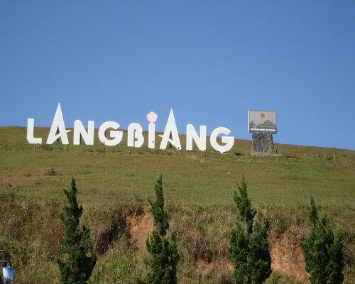

Hồ Xuân Hương - trái tim thơ mộng của Đà Lạt
Hồ Xuân Hương là một hồ nước nhân tạo nằm ở trung tâm thành phố Đà Lạt, tỉnh Lâm Đồng. Hồ có hình trăng lưỡi liềm, dài khoảng 2 km, chu vi khoảng 5 km, diện tích khoảng 25 ha. Hồ được bao quanh bởi nhiều địa danh du lịch nổi tiếng của Đà Lạt như: Vườn hoa thành phố, Công viên Yersin, Đồi Cù, Quảng trường Lâm Viên,... Hồ Xuân Hương được xây dựng vào năm 1919 dưới thời Pháp thuộc. Ban đầu, hồ có tên là Hồ Vạn Kiếp, sau đó được đổi tên thành Hồ Xuân Hương vào năm 1953. Tên gọi này được đặt theo tên của nữ sĩ Xuân Hương, một trong những nhà thơ nổi tiếng nhất của Việt Nam.
Hồ Xuân Hương mang vẻ đẹp thơ mộng và trữ tình, được ví như "trái tim thơ mộng" của Đà Lạt. Hồ được tô điểm bởi những hàng thông xanh mát, những hàng hoa khoe sắc và những chiếc thuyền hoa xuôi ngược. Buổi sáng, hồ ẩn hiện trong làn sương mờ ảo, tạo nên một khung cảnh huyền ảo, lung linh. Buổi chiều, hồ khoác lên mình chiếc áo hoàng hôn rực rỡ, khiến lòng người xao xuyến. Hồ Xuân Hương là một địa điểm du lịch nổi tiếng của Đà Lạt. Đến với hồ Xuân Hương, du khách có thể tham gia nhiều hoạt động thú vị như: đi dạo quanh hồ, ngắm cảnh hồ, chèo thuyền, đạp vịt,... Ngoài ra, hồ Xuân Hương cũng là nơi tổ chức nhiều lễ hội, sự kiện văn hóa lớn của Đà Lạt Nếu có dịp đến Đà Lạt, bạn đừng quên ghé thăm hồ Xuân Hương để tận hưởng vẻ đẹp thơ mộng và trữ tình của hồ nước này nhé!.